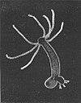

hydra

Definition: Hydra ( HY-drə) is a genus of small freshwater organisms of the phylum Cnidaria and class Hydrozoa. They are native to the temperate and tropical regions. The genus was named by Linnaeus in 1758 after the Hydra, which was the many-headed beast defeated by Heracles, as when the animal had a part severed, it would regenerate much like the hydra’s heads. Biologists are especially interested in Hydra because of their regenerative ability; they do not appear to die of old age, or to age at all.
Source: Wikipedia
Wikipedia Page (Something wrong with this association? Let us know.)
Wikidata Page (Something wrong with this association? Let us know.)